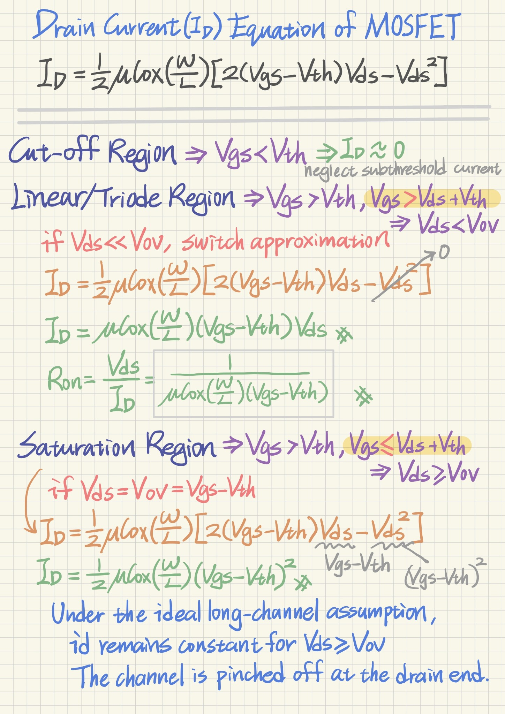
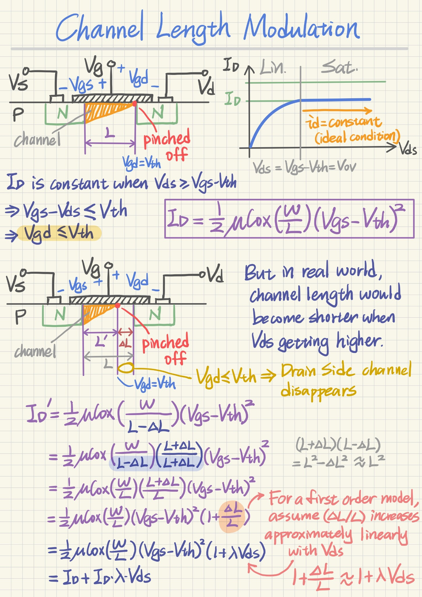
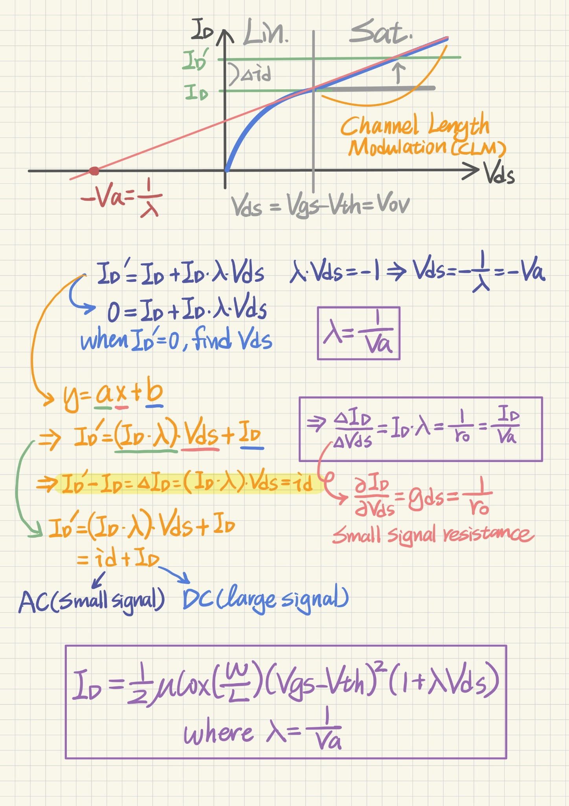
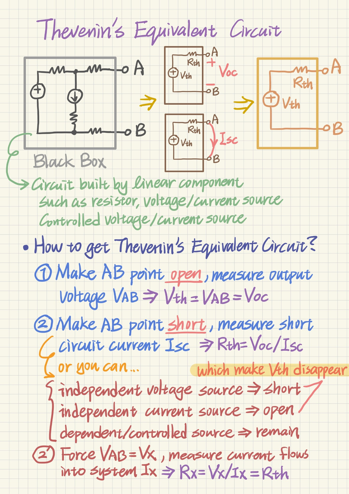
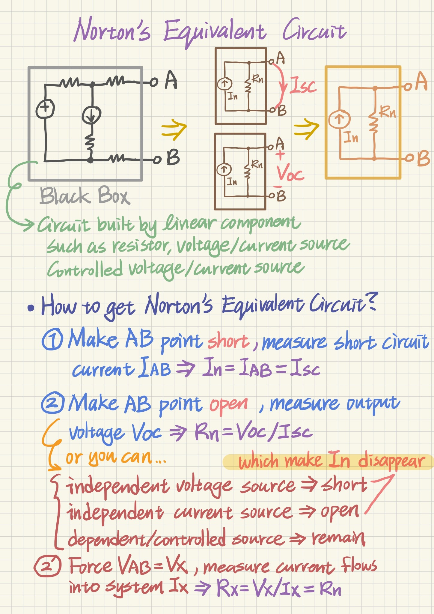
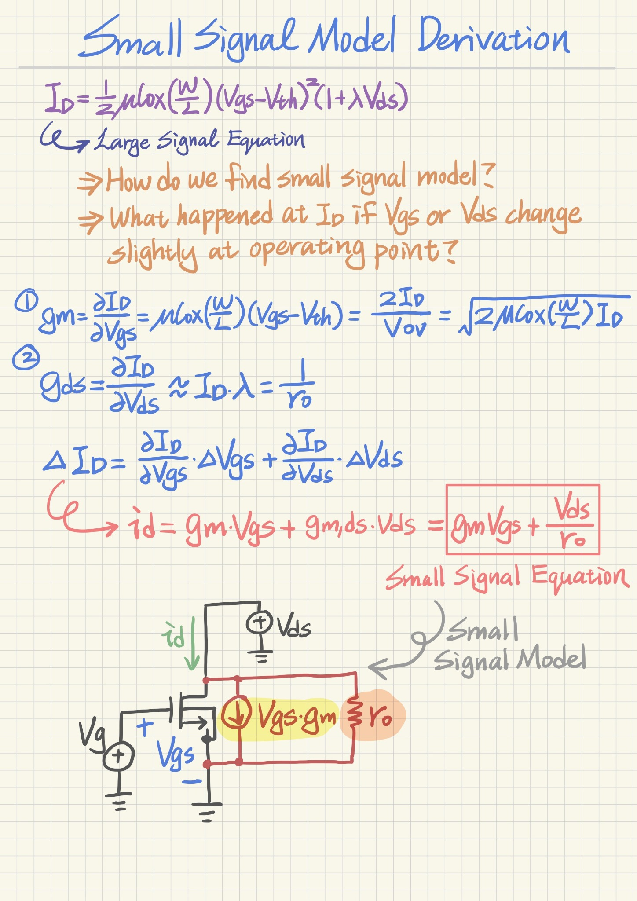

Basic Analog Concepts
A beginner-oriented path from MOSFET large-signal behavior to channel-length modulation, linear equivalent circuits, and the small-signal model used in analog IC analysis.
MOSFET Operating Regions Start from the large-signal I–V picture before using small-signal models
Last updated · 2026.08.19
Figure 1. The three basic MOSFET operating regions and the boundary set by the overdrive voltage VOV = VGS − VTH.
Core idea
A MOSFET does not follow one single drain-current equation under every bias condition. Its behavior depends mainly on VGS and VDS, so the first step in almost every analog analysis is to decide which operating region the device is in before choosing an equation or a model.
A useful quantity is the overdrive voltage, VOV = VGS − VTH. Once VGS exceeds the threshold voltage, an inversion channel forms. The value of VDS then determines whether that channel extends continuously from source to drain or becomes pinched off near the drain end.
Region-by-region interpretation
- Cutoff: VGS < VTH. In the simple long-channel model, no strong inversion channel is formed and ID is taken as approximately zero. Subthreshold current is intentionally neglected at this introductory stage.
- Triode / linear region: VGS > VTH and VDS < VOV. A channel exists along the full source-to-drain path, and ID depends strongly on VDS. For sufficiently small VDS, the MOSFET can be approximated as a voltage-controlled resistance.
- Saturation: VGS > VTH and VDS ≥ VOV. The channel is pinched off near the drain. In the ideal long-channel model, the drain current is then determined primarily by VGS rather than VDS. This is the region most often used for analog gain stages and current sources.
Why the boundary is VDS = VOV
At the drain end of an NMOS channel, the local gate-to-channel voltage is approximately VGD. Pinch-off begins when the drain-end inversion condition just reaches threshold, or VGD = VTH. Because VGD = VGS − VDS, this condition becomes VDS = VGS − VTH = VOV. This gives a simple physical meaning to the triode–saturation boundary.
Cutoff: ID ≈ 0, for VGS < VTH
Triode: ID = μCox(W/L)[(VGS − VTH)VDS − VDS²/2]
Triode, if VDS ≪ VOV: ID ≈ μCox(W/L)(VGS − VTH)VDS
Saturation (ideal): ID = 1/2 · μCox(W/L)(VGS − VTH)²
Triode / saturation boundary: VDS = VOV = VGS − VTH
Channel-Length Modulation Why saturation current is not perfectly constant in a real MOSFET
Last updated · 2026.08.19
Figure 2. As VDS increases beyond saturation, the pinch-off point moves toward the source and the effective channel length becomes slightly shorter.
From ideal saturation to a real MOSFET
In the ideal long-channel square-law model, once VDS ≥ VOV, the drain current is treated as independent of VDS. On an ideal ID–VDS plot, the saturation curve would therefore be perfectly horizontal.
A real MOSFET is different. Increasing VDS increases the reverse bias across the drain-body junction. The drain-side depletion region expands into the channel and the pinch-off point moves slightly toward the source. The electrically active channel is then shorter than the drawn channel length.
Effective channel length
If the original channel length is L and the drain-side pinch-off region extends by ΔL, the effective channel length can be viewed as L′ = L − ΔL. Because the saturation current is proportional to W/L, reducing the effective L increases ID slightly even though VGS has not changed.
For a small change in channel length, the ratio can be approximated to first order: L/(L − ΔL) ≈ 1 + ΔL/L. If ΔL/L grows approximately linearly with VDS, that extra current can be represented compactly by the familiar (1 + λVDS) factor.
What to remember physically
- Pinch-off does not mean that drain current stops flowing.
- Increasing VDS beyond the saturation boundary moves the pinch-off point.
- The effective channel becomes slightly shorter, so ID increases.
- The result is a finite positive slope in the saturation-region I–V curve.
- That slope is the origin of finite MOSFET output resistance.
ID,ideal = 1/2 · μCox(W/L)(VGS − VTH)²
L′ = L − ΔL
ID′ ∝ W/(L − ΔL) ≈ (W/L)(1 + ΔL/L)
Assume ΔL/L ∝ VDS → ID ≈ ID,ideal(1 + λVDS)
λ, Early Voltage(Va), and Output Resistance(ro) Translate the sloped saturation curve into λ, Va, gds, and ro
Last updated · 2026.08.19
Figure 3. The nonzero saturation-region slope can be expressed using λ, extrapolated to the Early-voltage intercept Va, and converted into the small-signal output resistance ro.
1. λ describes how strongly ID changes with VDS
Channel-length modulation is commonly included by multiplying the ideal saturation current by (1 + λVDS). The parameter λ therefore describes how sensitive the drain current is to drain-source voltage while the transistor is in saturation. A larger λ means a steeper ID–VDS slope; a smaller λ means a flatter current-source characteristic.
At a fixed VGS, the first-order model is approximately a straight line versus VDS. This linearized picture is especially useful because the slope can be related directly to small-signal output conductance.
2. Early Voltage(Va) is the extrapolated voltage-axis intercept
If the approximately straight saturation-region line is extended backward, it intersects the VDS axis near −Va. Setting the first-order current expression to zero gives 1 + λVDS = 0, so the intercept occurs at VDS = −1/λ. The magnitude of that intercept is therefore Va ≈ 1/λ in this first-order model.
This gives two equivalent ways to describe the same behavior: a small λ corresponds to a large Va, while a large λ corresponds to a small Va. A larger Va means the saturation curve is flatter and the MOSFET behaves more like an ideal current source.
3. The slope becomes gds, and its reciprocal becomes ro
Around a chosen DC operating point, imagine changing VDS by only a small amount. The resulting incremental drain-current change is Δid ≈ gdsΔvds, where gds = ∂ID/∂VDS. For the simple CLM model, this slope is approximately λID.
The corresponding small-signal resistance looking into the drain is ro = 1/gds. Therefore, a device with weaker channel-length modulation has a larger ro. This finite ro is one of the most important non-idealities in analog design because it directly limits the gain of current mirrors, common-source stages, cascodes, and operational amplifiers.
DC value versus small-signal change
It is useful to keep the notation separate. ID is the DC bias current at the operating point, while id or ΔID denotes the small incremental current around that point. The output resistance ro describes only this local slope; it is not the same as the large-signal ratio VDS/ID.
ID ≈ ID0(1 + λVDS)
Va ≈ 1/λ
gds = ∂ID/∂VDS ≈ λID
ro = 1/gds ≈ 1/(λID)
ro ≈ Va/ID
Δid ≈ gds·Δvds = Δvds/ro
Thevenin Equivalent Circuit Reduce a linear two-terminal network to one voltage source and one resistance
Last updated · 2026.08.19
Figure 4. Any linear two-terminal network can be represented at terminals A–B by an ideal voltage source VTH in series with an equivalent resistance RTH.
What Thevenin equivalence means
Imagine that everything inside a complicated linear circuit is hidden inside a black box and only terminals A and B are visible. For any load connected to A–B, the external voltage-current behavior can be reproduced by a much simpler circuit: one ideal voltage source VTH in series with one resistance RTH.
The internal circuit is not physically replaced inside the real system. The equivalent only says that, as viewed from A–B, the load sees exactly the same terminal relationship. This makes it a powerful analysis tool for bias networks, loading effects, output resistance, and later small-signal circuit calculations.
Step 1: Find VTH
Remove the external load so that A–B is open-circuited. Because no load current flows, the measured terminal voltage is the open-circuit voltage. That voltage is exactly the Thevenin source voltage: VTH = VOC.
Step 2: Find RTH
One direct approach is to short A–B, calculate the short-circuit current ISC, and use RTH = VOC/ISC. This follows directly from the Thevenin equivalent itself: when A–B is shorted, VTH drives current through RTH.
Another common approach is the test-source method. First deactivate only the independent sources, then apply a test voltage VX across A–B and calculate the current IX flowing into the network. The resistance seen at the port is RTH = VX/IX. This method is especially useful when dependent or controlled sources are present.
Important source-zeroing rule
- An independent ideal voltage source set to 0 V becomes a short circuit.
- An independent ideal current source set to 0 A becomes an open circuit.
- Dependent / controlled sources remain active because their values are determined by circuit variables.
VTH = VOC
RTH = VOC / ISC
or: deactivate independent sources, apply VX → RTH = VX / IX
Norton Equivalent Circuit The current-source counterpart of the Thevenin equivalent
Last updated · 2026.08.19
Figure 5. The same linear two-terminal network can also be represented by an ideal current source IN in parallel with an equivalent resistance RN.
Same terminal behavior, different form
Norton and Thevenin equivalents describe the same linear two-terminal network. Thevenin uses a voltage source in series with a resistance, while Norton uses a current source in parallel with a resistance. Which form is easier depends on how the surrounding circuit is connected.
The Norton form is often convenient when several branches share the same node, when current division is important, or when a circuit already looks naturally like a current source driving an output resistance.
Step 1: Find IN
Short terminals A and B and calculate the current that flows through the short. That current is the Norton source current: IN = ISC. This works because the parallel Norton resistance has zero voltage across it when the output terminals are shorted, so the source current flows through the external short.
Step 2: Find RN
The Norton resistance is identical to the Thevenin resistance seen from the same terminals: RN = RTH. It can therefore be found from VOC/ISC or with the same test-source method after deactivating only the independent sources.
Thevenin ↔ Norton conversion
Because the two equivalents must produce the same open-circuit voltage and short-circuit current, they convert directly through Ohm's law. The resistance does not change; only the source representation changes.
- Same port resistance: RN = RTH.
- Open-circuit voltage: VTH = INRN.
- Short-circuit current: IN = VTH/RTH.
IN = ISC
RN = RTH = VOC / ISC
VTH = IN · RN
IN = VTH / RTH
MOSFET Small-Signal Model Derivation Linearize the large-signal drain-current equation around the operating point
Last updated · 2026.08.19
Figure 6. Small-signal analysis linearizes the nonlinear MOSFET around one DC operating point and expresses the local drain-current change through gm and ro.
Why a small-signal model is needed
The MOSFET drain-current equation is nonlinear, so solving a complete analog circuit directly from the large-signal square-law equation can quickly become cumbersome. Most analog gain calculations, however, ask a much smaller question: after the DC bias point has already been established, what happens when the input changes only a little?
Around one operating point, a smooth nonlinear curve can be approximated by its tangent line. Small-signal analysis uses exactly this idea. The large DC quantities establish the operating point, and the small lowercase quantities describe only the incremental variations around it.
Linearizing ID around the bias point
If both VGS and VDS change slightly, the first-order drain-current change can be written as the sum of two partial-derivative terms. The sensitivity to VGS is called the transconductance gm, while the sensitivity to VDS is the output conductance gds.
Therefore, a small gate-source voltage variation generates a current gmvgs, and a small drain-source voltage variation generates an additional current gdsvds. Because gds = 1/ro, the second effect can be represented by a resistor ro between drain and source.
Meaning of gm
gm tells us how effectively a small change in gate-source voltage controls drain current at the chosen bias point. For the long-channel square-law saturation model, gm = μCox(W/L)VOV, which can also be written as 2ID/VOV. A larger gm means more incremental drain-current change for the same input voltage change.
Meaning of ro
ro comes from channel-length modulation. If λ were zero, the saturation curve would be perfectly horizontal, gds would be zero, and ro would be infinite. A real MOSFET has a finite slope, so ro is finite and appears in parallel with the controlled current source in the small-signal model.
Large signal versus small signal notation
- VGS, VDS, ID: DC / large-signal operating-point quantities.
- vgs, vds, id: small incremental signals around that operating point.
- The small-signal model is valid only while the perturbation is small enough that the local linear approximation remains reasonable.
- The MOSFET should remain in the intended operating region while the small signal moves around the bias point.
gm = ∂ID/∂VGS ≈ μCox(W/L)VOV = 2ID/VOV
gds = ∂ID/∂VDS ≈ λID = 1/ro
ΔID ≈ (∂ID/∂VGS)ΔVGS + (∂ID/∂VDS)ΔVDS
id = gm·vgs + gds·vds = gm·vgs + vds/ro